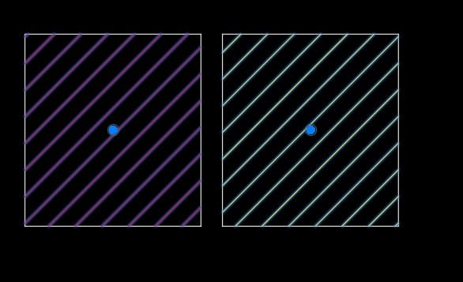
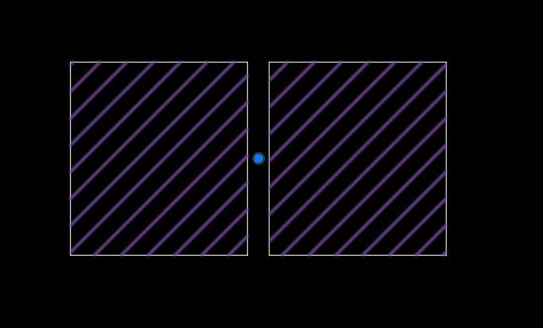

Trong quá trình vẽ, chỉnh sửa mặt bằng kiến trúc, kết cấu hoặc khi chia nhỏ phân khu dự án, các vùng tô (Hatch) thường bị phân mảnh thành nhiều block đối tượng rời rạc. Khi cần chỉnh sửa thông số chu kỳ họa tiết (Scale), màu sắc hoặc tính tổng diện tích vùng tô, việc click chọn từng Hatch con hoặc hì hục ngồi bo lại đường biên Ranh giới (Boundary) từ đầu vừa rườm rà vừa lãng phí vô số thời gian.
During the process of drawing, editing architectural/structural floor plans, or subdividing project zones, hatch areas often become fragmented into multiple separate objects. When you need to edit the pattern scale, color, or calculate the total hatch area, clicking each sub-hatch individually or redrawing the boundary from scratch is tedious and wastes countless hours.
Để khắc phục nhược điểm gây bức bối này, iViDLab trân trọng đem tới cho kỹ sư xây dựng và kiến trúc sư công cụ Merge Hatch (MH) — giải pháp tối ưu cho phép gộp nối liền mạch hàng chục vùng Hatch rời rạc trở thành 1 đối tượng duy nhất chỉ trong tích tắc!
To overcome this frustrating bottleneck, iViDLab proudly introduces Merge Hatch (MH) to structural engineers and architects — an optimal solution that seamlessly merges dozens of fragmented hatches into a single unified object in just a split second!

Hình 1: Các vùng Hatch rời rạc trên bản vẽ được gộp liền mạch thành một khối thống nhất nhờ Lisp MH Figure 1: Fragmented hatch areas seamlessly merged into a unified block using the MH LispCông cụ Merge Hatch thực thi dựa trên thuật toán can thiệp trực tiếp vào cấu trúc chuỗi dữ liệu ranh giới (Boundary Data) của mã nhóm đối tượng DXF assoc 91 trong AutoCAD, mang tới sự khác biệt hoàn toàn so với các cách vẽ lại truyền thống:
The Merge Hatch tool operates via an algorithm that directly manipulates the Boundary Data structure of the DXF group code assoc 91 within AutoCAD, offering a completely different approach from traditional redrawing methods:
| Tính NăngFeature | Giá Trị Mang Lại Cho Người DùngValue Delivered to Users |
|---|---|
| Không Cần Vẽ Lại BoundaryNo Need to Redraw Boundaries | Bỏ qua hoàn toàn công đoạn tạo đường polyline ranh giới mới hay xóa Hatch cũ đi tô lại từ đầu. Thuật toán tự lôi kéo và nối các ranh giới hiện hữu lại với nhau liền mạch. Completely skip the process of creating new polyline boundaries or deleting old hatches to re-hatch from scratch. The algorithm automatically pulls and seamlessly connects existing boundaries together. |
| Kế Thừa Thuộc Tính Hatch ĐầuInherits Properties from the First Hatch | Đối tượng Hatch đầu tiên trong tập hợp được quét chọn sẽ làm "máy chủ" định dạng. Mọi thông số (tên hoa văn Pattern, góc quay Angle, tỷ lệ Scale) đều tự động chia sẻ đồng nhất cho khối gộp hậu kỳ. The first hatch object selected in the set acts as the "master" format. All parameters (Pattern name, Angle, Scale) are automatically and uniformly shared across the newly merged block. |
| Tối Ưu & Dọn Dẹp Bản VẽOptimize & Clean the Drawing |
Sau khi hợp nhất cấu trúc ranh giới, toàn bộ các Hatch lẻ tẻ thâm hụt trước đó đều tự động biến mất, giúp tệp .DWG giảm thiểu thực tế số lượng Ent, trở nên nhẹ nhàng, mượt mà và sạch sẽ khi zoom xoay.
After merging the boundary structures, all previous fragmented hatches automatically disappear, effectively reducing the Ent count in the .DWG file, making it lighter, smoother, and cleaner during panning and zooming.
|
| Hỗ Trợ Hoàn Trả (Undo) Siêu SạchSuper Clean Undo Support |
Được lót sẵn bộ đệm _undo be / e an toàn tuyệt đối. Nếu thao tác nhầm lẫn hay chọn sai đối tượng, chỉ cần gõ nhẹ Ctrl + Z (hoặc lệnh U), toàn bộ trạng thái bản vẽ lập tức hồi phục trọn vẹn 100%.
Wrapped safely with _undo be / e buffers. If a mistake is made or wrong objects are selected, simply tap Ctrl + Z (or the U command), and the drawing state will instantly and perfectly restore 100%.
|
Để tận hưởng sự tiện lợi của Lisp gộp Hatch, bạn chỉ cần thực hiện đúng theo 3 bước cực kỳ dễ nhớ:
To enjoy the convenience of this Hatch merging Lisp, you simply need to follow 3 easy steps:
MH (rồi nhấn Space / Enter).
In the drawing workspace, enter the shortcut on the Command Line to launch the command: type MH (then press Space / Enter).
Select hatches to merge:) và nhấn Space lần cuối để hoàn tất!
Drag your mouse to create a selection box covering the fragmented hatch objects you want to merge (prompt: Select hatches to merge:) and press Space one last time to finish!
MH - Hướng dẫn tuỳ chỉnh đổi phím tắt trong AutoLISP (nếu bạn muốn tùy biến lại tên phím tắt theo thói quen tay phím của riêng mình).
Command: MH - How to customize AutoLISP commands (if you want to remap the shortcut name to suit your personal typing habits).

Hình 2: Thao tác gọi lệnh MH trên thanh Command Line và quét chọn nhanh chóng khối ranh giới Hatch cần hợp nhất Figure 2: Calling the MH command on the Command Line and rapidly box-selecting the hatch boundaries to mergeTải về bộ công cụ gốc ngay tại đường dẫn bên dưới:
Download the original toolkit via the link below:
MH - Merge hatch.lsp